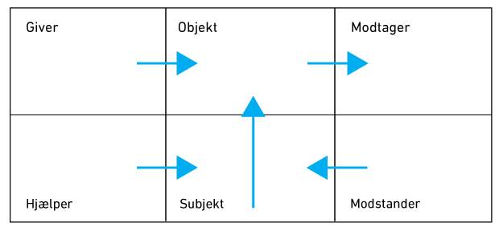

På denne side præsenteres genretræk for eventyr og en analysemodel, der hedder aktantmodellen.
Du skal også læse to tekster på dansk; den ene handler om eventyr-genren, og den anden handler om den historiske situation i Tyskland på brødrene Grimms tid.
Tekstanalyse
For at få et overblik over eventyrets handlingsgang og opbygning kan man anvende forskellige analysemodeller. En særlig velegnet model er den franske litteraturforsker A.J.Grimas’ aktantmodel (På tysk hedder aktantmodel Aktantenmodell). Denne har han udarbejdet på basis af den russiske eventyrforsker Vladimir Propps meget omfattende funktionsrække. Greimas opererer i sin model med 6 typiske figurer, som han kalder aktanter. Til hver aktant er der knyttet nogle bestemte handlinger, som indgår i et fast mønster. Det er dette mønster, Greimas viser med sin aktantmodel.
Læs om eventyrgenren her.
Læs om den historiske situation i Tyskland her.